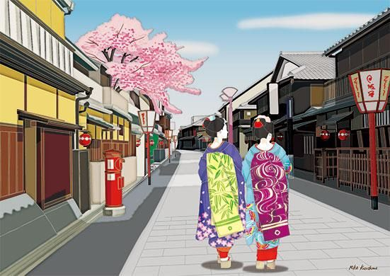
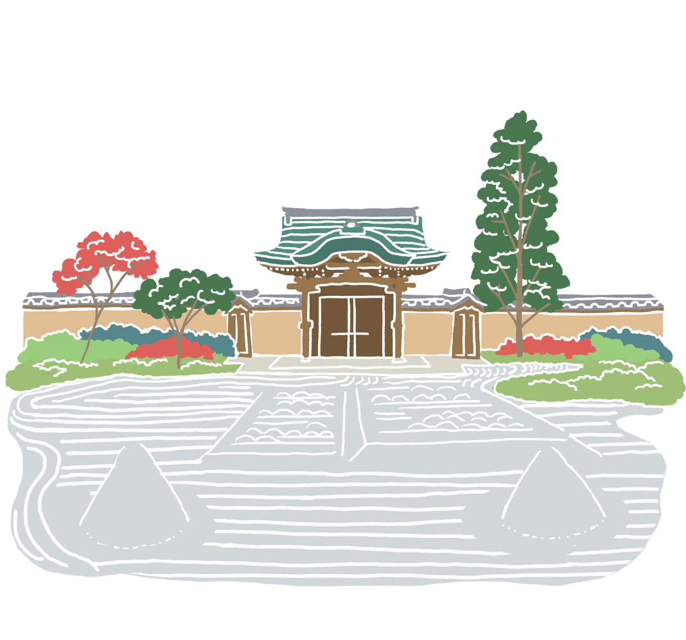
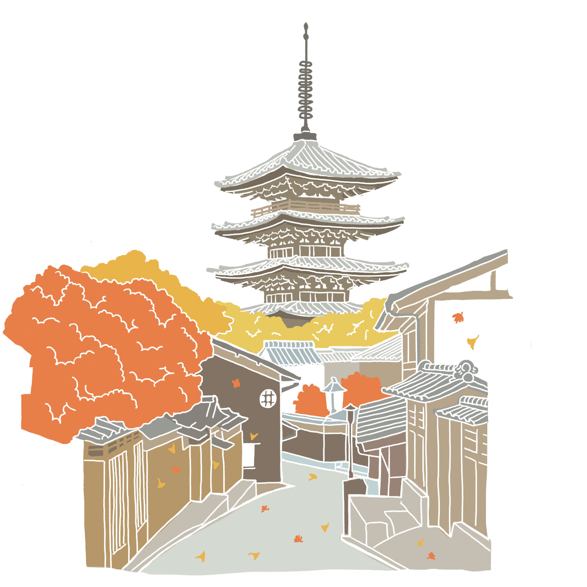
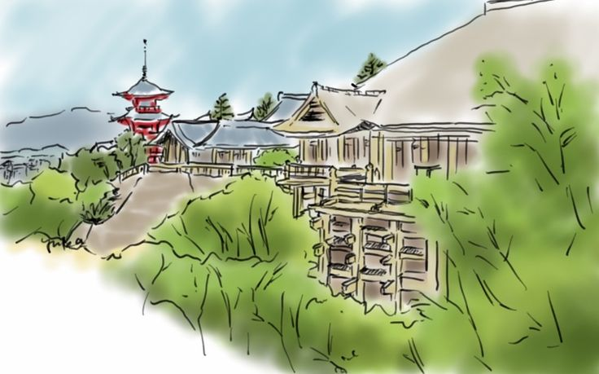
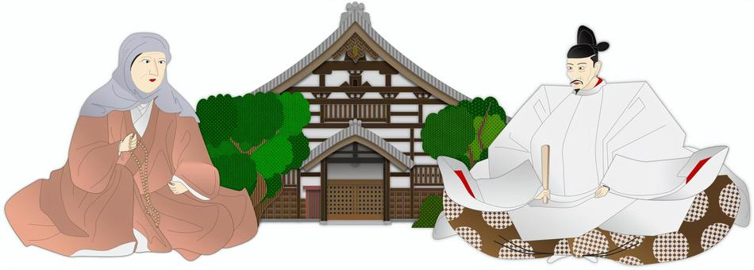
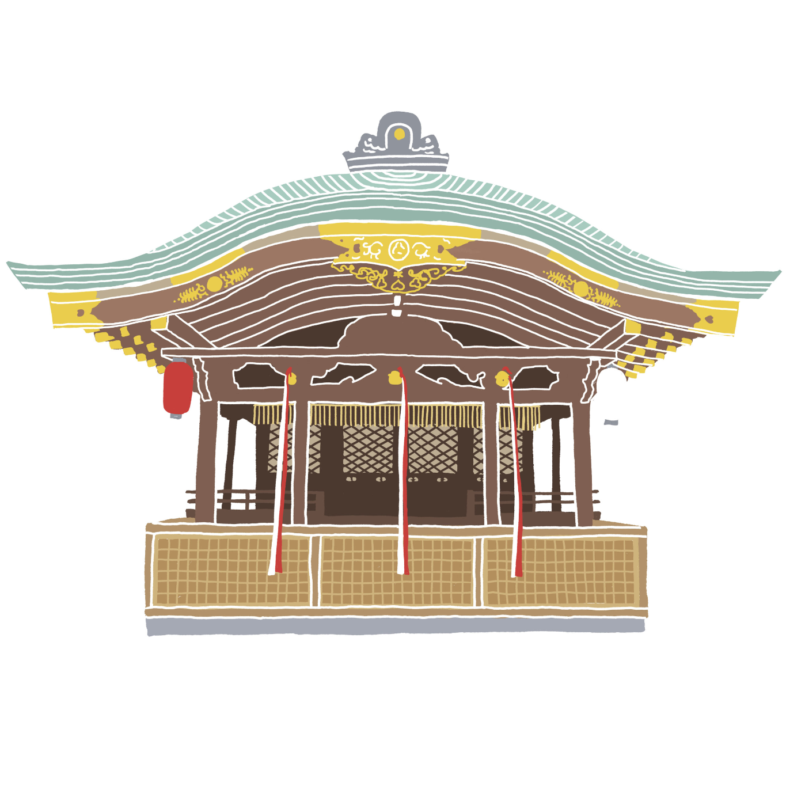
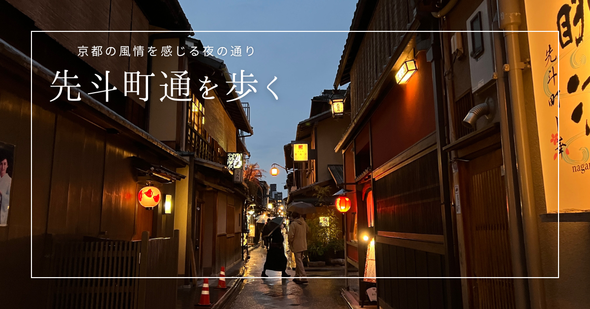

Tatsumi Bridge, Shirakawa

Gion's most photographed corner — and a filming location for Memoirs of a Geisha.
Open in Google Maps →Hanamikoji-dori

Real geisha district — come back after dark and you might spot a maiko slipping between engagements.

Open in Google Maps →Yasaka Pagoda (Hōkan-ji)

One of Kyoto's defining landmarks — a five-story pagoda dating back to 1440. The surrounding lanes (Ninenzaka & Sannenzaka) are lined with old machiya townhouses turned into craft shops — one of the most atmospheric stretches in the city.
Kiyomizu-dera

UNESCO World Heritage Site. Famous for the wooden stage built without a single nail — the view over Kyoto is the reward for the climb.
Nene-no-Michi

A quiet stone-paved lane skirting Kōdai-ji's bamboo grove — no entry fee, no temple visit needed. This is the calm, unhurried stretch of the walk: just the bamboo, a few artisan shops, and a break from the crowds before Yasaka Shrine.
Open in Google Maps →Yasaka Shrine

The spiritual heart of Gion — free entry, open 24 hours, glowing after dark.
Open in Google Maps →Pontocho

Kyoto's most atmospheric dining alley, best after dusk — paper lanterns, and sometimes live shamisen drifting out of the teahouses.